2 Поняття про машинно-тракторний агрегат
3 Класифікація машинно-тракторних агрегатів
4 Основні вимоги до машинно-тракторних агрегатів
1 Енергетичні засоби сільськогосподарського вирощування та їх порівняльна характеристика
Енергетичні засоби сільськогосподарського виробництва поділяються на рухомі (мобільні), обмежено рухомі і стаціонарні.
Рухомі засоби енергетики – трактори, самохідні шасі, автомобілі, жива тяглова сила. Також, в сільськогосподарському виробництві використовується авіація.
Обмежено рухомими засобами енергетики є канатно-тракторні і електротракторні системи тяги.
Стаціонарними засобами енергетики є різні електричні і теплові установки, вітряні, гідравлічні та інші двигуни.
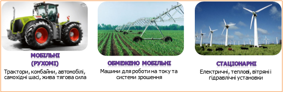
Рис. 1.1.1. Енергетичні засоби сільськогосподарського виробництва
(відео: епізод 1: гідравлічні двигуни, епізод 2: вітряні двигуни)
Основні енергетичні засоби для проведення технологічних операцій вирощування культур – трактори і самохідні шасі, а при виконанні транспортних робіт – автомобілі і трактори.
На тракторний парк припадає близько 40% енергетичних потужностей, які є в сільському господарстві країни.
Трактори порівняно з іншими засобами енергетики в рослинництві мають певні переваги: вони маневрені, надійні в експлуатації, економічні, у них порівняно висока стабільність тягових властивостей.
Рис. 1.1.2. Класифікація вітчизняних тракторів
Характеристика тракторів за призначенням
У міжнародній практиці у відповідності до стандартів ISO 730/1 і 730/3-82 використовується класифікація тракторів за максимальною тяговою потужністю Nгак.max, отриманою при випробування енергетичного засобу на гладкій горизонтальній і сухій бетонованій поверхні, або поверхні, покритої скошеною/нескошеною травою. Трактори при цьому поділяються на чотири категорії, кожна з яких відповідним чином співвідноситься з класифікацією енергетичних засобів згідно з міжнародним стандартом ГОСТ 27021-86 (СТ СЭВ 628-85, див. табл.1.1.1).
Таблиця 1.1.1
Співвідношення між тяговими класами і категоріями тракторів
Категорія потужності і тягова потужність,
Nгак. max, кВт
Багаторічна практика останніх років показує, що класифікація згідно з ГОСТ 27021-86 (СТ СЭВ 628-85) дає більш точну уяву про експлуатаційні властивості трактора. А це, у свою чергу, дозволяє правильно підібрати до нього комплекс сільськогосподарських машин і знарядь (Джерело: http://econjournal.vsau".org/files/pdfa/394.pdf ).
Порівнюючи трактори за типом ходової частини існують як переваги, так і недоліки в експлуатації гусеничних і колісних тракторів (рис. 1.1.3).
Рис. 1.1.3. Порівняльна характеристика гусеничного і колісного тракторів
Останнім часом ходові системи колісних тракторів значно удосконалено. Застосування чотирьох ведучих коліс, пневматичних шин низького тиску, спарених і арочних шин, довантажувачів ведучих коліс сприяло поліпшенню тягово-зчіпних властивостей колісних тракторів.
Тягові показники тракторів являються одним із важливішихнормоутворюючих факторів, які є визначальними енергетичноїспроможності використання тракторів в конкретних ґрунтових умовах.Показники енергетичних властивостей визначають як досліднимшляхом, так і розрахунковим.
За даними випробувань будують тягову характеристику.
Тягова характеристика‒ це залежність тягової потужності (N), робочої швидкості (Vр), годинної витрати палива питомої витратипалива (Gгод) і величини буксування (δ) від зміни тягового зусилля (Рт) (рис. 1.1.4).
Рис. 1.1.4. Тягова характеристика трактора
Для тракторів, які використовуються у сільськогосподарському виробництві, номінальне тягове зусилля визначається як гранично-максимальне тягове зусилля за умови зчеплення з ґрунтом.
Сукупність типів тракторів створює їх типаж, що включає в себе кілька класів машин, які різняться між собою значенням номінального тягового зусилля. Кожний клас складається з групи конструктивно уніфікованих тракторів, що мають приблизно однакові тягові зусилля.
Таблиця 1.1.2
Типаж тракторів за класом і тяговим зусиллям
Клас тяги
трактора, тс
Номінальне
тягове зусилля,кН
ЮМЗ-6АКЛ, ЮМЗ-650, ЮМЗ-8070, ЮМЗ-8271, ЮМЗ-8274, ЮМЗ-8280,
МТЗ-8060, МТЗ-100, МТЗ-570, МТЗ-590, МТЗ-800, МТЗ-900, ЛТЗ-60АБ
ХТЗ-100, Т-70СМ, Т-70В, Т-90С, МТЗ-1021, МТЗ-1221, МТЗ-1222, ЛТЗ-95,
ЛТЗ-155
ХТЗ-150К-03, ХТЗ-150К-09, ХТ3-150К-12, МТЗ-1523, ХТЗ-151К, ХТЗ-17021,
ХТЗ-17022, ХТЗ-17221, ХТЗ-17321, ХТЗ-147421, ХТЗ-121, Т-150-05-09, ХТЗ-153Б, ХТЗ-150-07, X13-150-08, Т-156А, Т-156Б, Т-156М, Т-150Д, ХТЗ-150Д-03,
Т-150Д-05-09, ДТ-75Д, ДТ-75Н, ДТ-75МЛ, ДТ-175М, ДТ-175С
2 Поняття про машинно-тракторний агрегат
Машинно-тракторним агрегатом називається сукупність (раціональне співвідношення) робочих машин з джерелом енергії (трактором, самохідним шасі, електродвигуном) для виконання технологічної операції або певної групи операцій.
3 Класифікація машинно-тракторних агрегатів
Усі МТА розрізняються: за призначенням, кількістю виконуваних операцій, способом виконання їх, характером використання джерела енергії і передавального механізму агрегату, способом з'єднання з трактором, розміщенням машин відносно трактора.
Рис. 1.1.5. Класифікація МТА
За призначенням
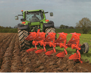  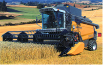
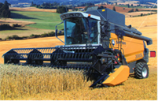
Орний агрегат Посівний агрегат Збиральний агрегат
За кількістю виконуваних одночасно операцій
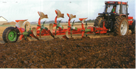 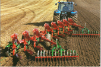 
Простий агрегат Комплексний агрегат Комбінований агрегат
За способом виконання операцій
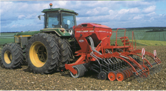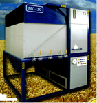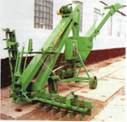
Мобільний агрегатСтаціонарний агрегат Стаціонарно-мобільний агрегат
За характером використання джерела енергії і передавального механізму
 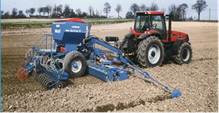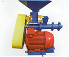
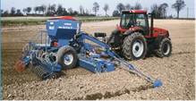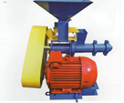
| Тяговий агрегат | Тягово-привідний агрегат | Привідний агрегат |
| Потужність двигунів трактора витрачається на переміщення самого трактора і робочої машини, що виконує будь-яку технологічну операцію (оранку, боронування тощо). При використанні з трактором транспортних причепів або кузовів тяговий агрегат називається транспортним | Потужність двигуна використовується не тільки на переміщення самого трактора і машини, а для приводу механізмів робочої машини (від ходових коліс машини, або через вал відбору потужності трактора) | Передавання потужності від двигуна до робочої машини здійснюється через вал відбору потужності (ВВП), пасову передачу, а також за допомогою електро- чи гідроприводу |
За способом з'єднання робочих машин з джерелом енергії

 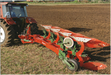
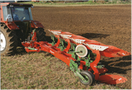
| Причіпний агрегат | Начіпнийагрегат | Напівначіпний агрегат |
| Складається з трактора і причіпної робочої машини, що має свою ходову частину (колеса, полозки тощо), або кількох машин і зчіпки | Складається з трактора (самохідного шасі), начіпної (або кількох) робочої машини і начіпної зчіпки, як правило, маса всієї машини у транспортному положенні сприймається ходовою частиною трактора. У робочому стані маса машини повністю або частково сприймається ґрунтом через робочі колеса, площини і робочі органи: | Відрізняється від начіпних тим, що вага робочих машин при транспортуванні розподіляється між опорними колесами самої машини і ходовою частиною трактора |
За розміщенням робочих машин відносно трактора
 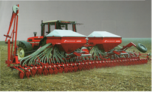
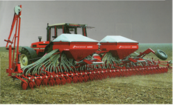
З переднім розміщенням З заднім розміщенням
 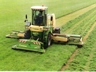
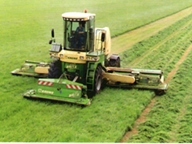
З боковим розміщенням З комбінованим розміщенням
За розміщенням робочих машин відносно повздовжньої осі трактора
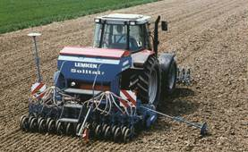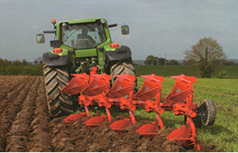
Симетричний агрегат Асиметричний агрегат
4 Основні вимоги до машинно-тракторних агрегатів
Для проведення сільськогосподарських робіт застосовують багато машинно-тракторних агрегатів різних типів і видів. До них ставлять певні вимоги (агротехнічні, технічні, економічні, ергономічні, охорони праці), яких слід додержувати при комплектуванні машинно-тракторних агрегатів.
Рис. 1.1.6. Показники ефективності роботи агрегатів
Агротехнічні вимоги ставляться до робочої машини і трактора.
При підборі робочої машини слід врахувати якісні показники і агронормативи (глибина оранки, висота зрізування рослин, норма висіву тощо), яким має задовольняти виконана операція; технологічні допуски, допуски втрати врожаю, пошкодження рослин та ін.
До трактора ставляться такі вимоги – прохідність в горизонтальній площині за значенням колії і шириною рушія; прохідність у вертикальній площині за польовим зазором і наявністю обтічників; прохідність за станом ґрунту – недопустимість утворення глибокої колії, значних деформацій, розпилення, ущільнення тощо.
Технічні вимоги включають: допустимі швидкісні режими як руху, так і робочих органів (частота обертання молотильного барабана) машин, кінематичні показники агрегатів, експлуатаційна надійність трактора, машини і агрегату в цілому.
Економічні фактори включають мінімальну собівартість при найменших затратах праці. Вихідними даними для визначення собівартості є: продуктивність агрегату, витрати на технічне обслуговування тощо.
Вимоги до зручності обслуговування:
· зручність керування агрегатом (оглядовість, легкість контролю за робочими органами, підтримання технологічного режиму тощо);
· зручність технічного обслуговування;
· зручність технологічного обслуговування.
Вимоги охорони праці.
Гігієнічні норми стосовно до сільськогосподарського виробництва визначають допустимий рівень вібрації, загазованості, запиленості, оптимальну температуру, освітленість і подібні показники на робочому місці механізатора, що забезпечують нешкідливі і безпечні умови праці.
Антропологічні норми характеризують відповідність робочого місця розмірам людини (раціональна поза, постава, огляд і деякі інші фактори).
Фізіологічні норми характеризують оптимальні умови функціонування людського організму (зусилля на педалях, важелях тощо).
5 Значення багатоопераційних машинно-тракторних агрегатів у впровадженні енергозберігальних технологій вирощування сільськогосподарських культур
Ресурсозберігаюча технологія забезпечує, крім збереження такого важливого ресурсу, як праця, зниження матеріалоємності і підвищення енерго-економічності системи машин, яка оновлюється; передбачає оптимізацію затрат мінеральних добрив, в тому числі і за рахунок збільшення виробництва і застосування високоякісних органічних добрив, зменшення витрат пестицидів за рахунок використання більш ефективних препаратів і економних способів їх застосування; зниження затрат цілого комплексу всіх інших ресурсів за рахунок поєднання технологічних операцій. (рис. 1.1.7)


Рис. 1.1.7. Різновиди енергозберігаючої технології
Частковим варіантом ресурсозберігаючих технологій є енергозберігаючі технології, в яких основна увага приділяється економії енергетичних ресурсів та хімічних засобів захисту рослин.
Дана технологія базується на використанні досягнень науки та виробничого досвіду, а саме:
- використання енергонасичених агрегатів, які виконують декілька поєднаних операцій за один прохід агрегату (комбіновані і комплексні агрегати);
- локальне внесення добрив;
- стрічкове внесення гербіцидів;
- смугове обприскування посівів технічних культур;
- зниження норм витрат матеріалів за рахунок підвищення якості та точності виконання операцій;
- суворе дотримання агронормативів у просторі і часі.
Основний показник формування багатоопераційних МТА – якість роботи; проте не слід забувати і про їхні продуктивність і економічність.
Застосування багатоопераційних агрегатів дає змогу:
- поліпшити завантаження тракторів за тягою, особливо при поєднанні малоенергетичних операцій з енергоємними;
- зменшити кількість проходів на полі трактора, як ведучої ланки агрегату, що зменшує ущільнення ґрунту, його розпил і ерозію;
- скорочувати затрати праці на одиницю оброблювальної площі;
- підвищувати продуктивність агрегатів.
(відео:епізод 3: техніка для ресурсозберігаючої технології)
Додатковий матеріал з даного питання: http://agrosev.narod.ru"/page149itemid2607number84.htm
Питання для самоконтролю
1. Які енергетичні засоби використовуються у сільському господарстві?
2. Як поділяються сільськогосподарські трактори?
3. Міжнародна класифікація тракторів за тяговою потужністю
4. Що таке машинно-тракторний агрегат?
5. Класифікація машинно-тракторних агрегатів.
6. Які основні вимоги ставляться до комплектування машинно-тракторних агрегатів?
7. Назвіть переваги використання багатоопераційних агрегатів.